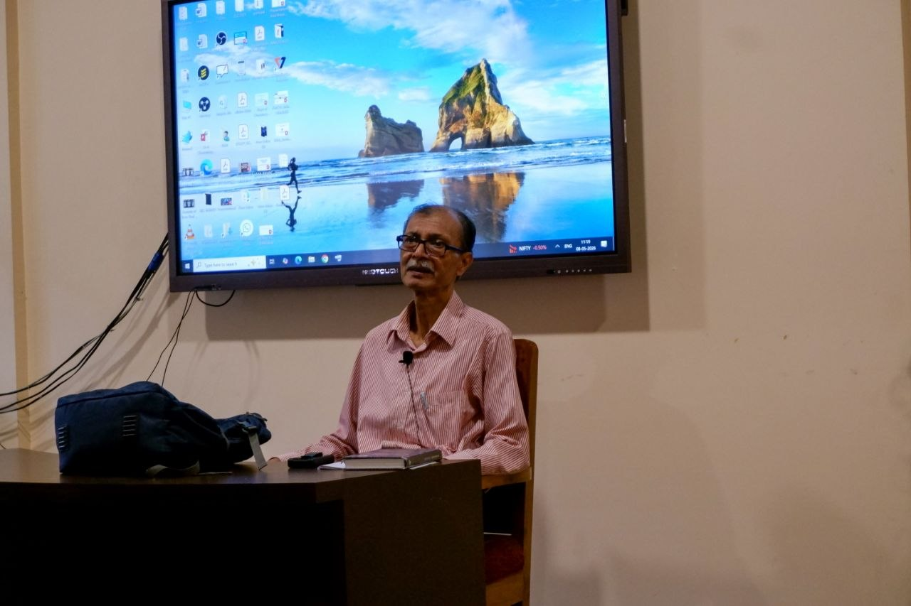
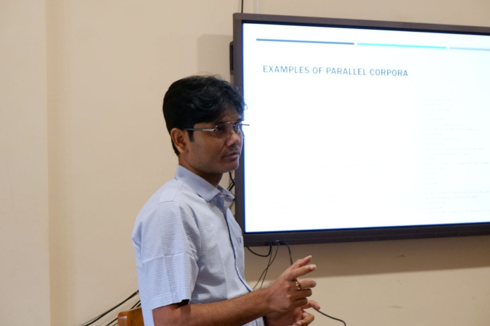
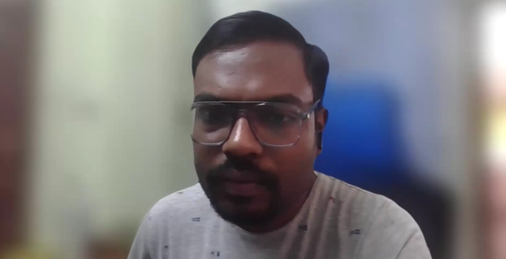

History, Application and the AI Frontier ইতিহাস, প্রয়োগ ও ভবিষ্যৎ
In collaboration with Department of English, Ramakrishna Mission Residential College, Narendrapur
Part-supported by BNP Paribas India · Implemented by India Foundation for the Arts
রামকৃষ্ণ মিশন রেসিডেন্সিয়াল কলেজ, নরেন্দ্রপুর-এর ইংরেজি বিভাগের সহযোগিতায়
বিএনপি পারিবা ইন্ডিয়া-র আংশিক সহযোগিতায় · ইন্ডিয়া ফাউন্ডেশন ফর দি আর্টস কর্তৃক বাস্তবায়িত


Bengali, the seventh most spoken language in the world with over 265 million speakers, occupies a paradoxical position in the landscape of language technology. While its literary heritage is among the richest in the South Asian tradition, its computational representation — particularly in the domain of machine translation — has historically lagged behind languages with comparable or even smaller speaker populations. The gulf between Bengali's cultural weight and its technological infrastructure formed the central provocation of this workshop. বিশ্বের সপ্তম বৃহত্তম ভাষা বাংলা, ২৬.৫ কোটিরও বেশি মানুষের মুখের ভাষা, ভাষা প্রযুক্তির পরিসরে এক বিরোধাভাসের অবস্থানে দাঁড়িয়ে। সাহিত্যিক ঐতিহ্যে দক্ষিণ এশিয়ার সমৃদ্ধতম ভাষাগুলির অন্যতম হলেও, যন্ত্র-অনুবাদের ক্ষেত্রে এর প্রযুক্তিগত অবকাঠামো তুলনীয় বা ক্ষুদ্রতর জনসংখ্যার ভাষাগুলির চেয়েও পিছিয়ে। বাংলার সাংস্কৃতিক গুরুত্ব ও প্রযুক্তিগত অবকাঠামোর এই ব্যবধান এই কর্মশালার কেন্দ্রীয় প্ররোচনা হিসেবে কাজ করেছিল।
The five-day intensive workshop equipped participants with the historical knowledge, critical vocabulary, and evaluative frameworks necessary to understand, assess, and intervene in the machine translation landscape for Bengali — as informed humanists rather than passive consumers of technology. No prior knowledge of programming, computational linguistics, or NLP was required. এই পাঁচ দিনের নিবিড় কর্মশালা অংশগ্রহণকারীদের বাংলা যন্ত্র-অনুবাদের পরিসরে বোঝা, মূল্যায়ন ও হস্তক্ষেপের জন্য প্রয়োজনীয় ঐতিহাসিক জ্ঞান, সমালোচনামূলক শব্দভাণ্ডার ও মূল্যায়ন কাঠামো দিয়ে সজ্জিত করেছিল — প্রযুক্তির নিষ্ক্রিয় ভোক্তা হিসেবে নয়, সচেতন মানবিক গবেষক হিসেবে।
Resource Persons
Resource Persons in Action



Five-Day Programme
The session traced the journey from the earliest decisions about representing speech in visual form, through the challenges of encoding Bengali script on a machine, to the foundational problem that precedes all translation: making a language computationally legible. Participants examined what is at stake — linguistically and politically — when a spoken language is formalised for a machine to read.
Prof. Chaudhuri discussed the development of the earliest Bengali language resources — dictionaries, thesauri, and the pioneering experiments in OCR, spell-checking, and text processing that established the infrastructure for all subsequent work. The session raised a central question: when we choose which texts to feed a machine, whose Bengali are we teaching it to speak?
Dr. Bhaskar examined a pivotal transitional moment in the field: systems that could not yet translate fluently, but had learned to retrieve meaning across languages. He discussed how, at this stage, translation was no longer about finding the 'right' equivalent word, but about locating relevant meaning — a reframing that had significant consequences for how Bengali text was processed and ranked.
Participants worked hands-on with IndicTrans2, BanglaBERT, Google Translate, and ChatGPT in a guided comparative exercise. They assessed the same Bengali literary passage, newspaper editorial, and conversational excerpt across multiple MT systems, developing practical evaluative vocabulary to articulate what each system got right — and what it lost.
Pritam Dey discussed how AI agents can be leveraged for more targeted Bengali translation — moving beyond generic output toward context-aware, domain-specific results. He conducted hands-on sessions using Google's Antigravity, walking participants through agent-driven translation workflows and their implications for language practitioners. The session drew to a close with a close-reading exercise centred on a passage from Jhumpa Lahiri's The Lowland and its Bengali translation নাবাল জমি (Nabal Jomi), translated by Poulomi Sengupta. Participants examined the translation's choices with care — its handling of cultural register, untranslatable affect, and the texture of Lahiri's prose in Bengali — and offered their observations directly to Pritam, who then attempted to feed those nuanced, humanistic insights back into the agentic workflow in real time, testing how far the machine could stretch toward what the readers had felt.
The slides, reading materials, and other resources used by the resource persons during the workshop will be made available on the Resources section of this website shortly. A comprehensive report of the workshop will be submitted to the India Foundation for the Arts as a formal project deliverable under the Platform Bengali / Bhashascope grant. কর্মশালায় পরিচালকবৃন্দ কর্তৃক ব্যবহৃত স্লাইড, পাঠ উপকরণ ও অন্যান্য সম্পদ শীঘ্রই এই ওয়েবসাইটের রিসোর্স বিভাগে পাওয়া যাবে। কর্মশালার একটি বিস্তারিত প্রতিবেদন প্ল্যাটফর্ম বেঙ্গলি / ভাষাস্কোপ অনুদানের আনুষ্ঠানিক প্রকল্প-প্রদেয় হিসেবে ইন্ডিয়া ফাউন্ডেশন ফর দি আর্টসে জমা দেওয়া হবে।
Machine translation is not merely a technical convenience; it is a gatekeeping infrastructure that determines which Bengali content reaches non-Bengali audiences, how Bengali speakers access global knowledge, and what forms of Bengali are computationally legitimised. This workshop traced Bengali MT's evolution from encoding struggles through cross-lingual retrieval to agent-driven generation — and brought computer scientists and professional language practitioners into a conversation that rarely happens. যন্ত্র-অনুবাদ নিছক প্রযুক্তিগত সুবিধা নয়; এটি একটি দ্বাররক্ষী পরিকাঠামো যা নির্ধারণ করে কোন বাংলা বিষয়বস্তু অবাঙালি শ্রোতার কাছে পৌঁছায়, বাংলাভাষীরা কীভাবে বৈশ্বিক জ্ঞানে প্রবেশ করে, এবং বাংলার কোন রূপ প্রযুক্তিগতভাবে বৈধতা পায়। এই কর্মশালা বাংলা MT-এর বিবর্তন — এনকোডিং সংকট থেকে ক্রস-লিঙ্গুয়াল রিট্রিভাল থেকে এজেন্ট-চালিত জেনারেশন পর্যন্ত — অনুসরণ করেছে, এবং কম্পিউটার বিজ্ঞানী ও পেশাদার ভাষাচর্চাকারীদের এমন একটি কথোপকথনে এনেছে যা খুব কমই ঘটে।
Platform Bengali is a foundation project sponsored by the India Foundation for the Arts (IFA) under the Arts Research programme. Principal Investigator: Prithu Halder · Contact: bhashascope@gmail.com প্ল্যাটফর্ম বেঙ্গলি ইন্ডিয়া ফাউন্ডেশন ফর দি আর্টসের (আই এফ এ) কলা গবেষণা কার্যক্রমের অন্তর্ভুক্ত একটি ফাউন্ডেশন প্রকল্প। প্রধান গবেষক: পৃথু হালদার · যোগাযোগ: bhashascope@gmail.com